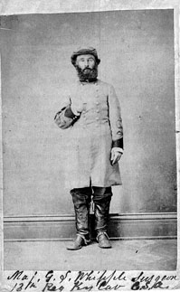

1. James M. McPherson, BATTLE CRY OF FREEDOM
2. Reid Mitchell, THE VACANT CHAIR
3. Michael Shaara, THE KILLER ANGELS
4. Kenneth M. Stampp, THE ERA OF RECONSTRUCTION
5. Bell L Wiley, JOHNNY REB
| Week 1 | |
| Jan 7 | Why study the Civil War? |
| Jan 9 | The Political Economy of Slavery |
| Reading: BCOF 3-116 | |
| Week 2 | |
| Jan 14 | A House Divided |
| Jan 16 | Bleeding Kansas |
| Reading: BCOF 117-169 | |
| Week 3 | |
| Jan 21 | The Election of 1860 |
| Jan 23* | Secession |
| Reading: BCOF 170-307; Wiley 15-107; Mitchell 3-87 | |
| Week 4 | |
| Jan 28 | Waging War: The Soldier's Story |
| Jan 30 | Embattled Courage |
| Reading: BCOF 308-368; Wiley 108-243; Mitchell 89-133 | |
| Week 5 | |
| Feb 4 | The Civil War in Slides and Music |
| Feb 6 | Bonnet Brigades |
| Reading: BCOF 369-489; Wiley 244-349 | |
| Week 6 | |
| Feb 11 | Gettysburg |
| Feb 13* | The Colored Volunteers |
| Reading: BCOF 490-665; Killer Angels | |
| Week 7 | |
| Feb 18 | The Confederate Nation |
| Feb 20 | The Union's Civil War |
| Reading: BCOF 667-750; Stampp 24-49 | |
| Week 8 | |
| Feb 25 | The Road to Appomattox |
| Feb 27 | The Assassination of Abraham Lincoln |
| Reading: Mitchell 135-150; Stampp 3-23; BCOF 751-830 | |
| Week 9 | |
| March 4 | "When Johnny Comes Marching Home" |
| March 6* | Waging Peace |
| Reading: Stampp 51-154; BCOF 831-862 | |
| Week 10 | |
| March 11 | The End of Reconstruction |
| March 13 | The Civil War in Historical Memory |
| Reading: Mitchell 151-166; Stampp 155-215 | |
This course will have in-class tests, a paper, and a final exam. Every Thursday, a study guide will be distributed to help you focus your studying.
IN-CLASS TESTS Three short tests or quizzes will be administered at the end of lecture in weeks 3, 6, and 9. Each quiz will be based on the lecture and reading material of the previous TWO weeks and is worth ten points. The date of the quiz is marked by an asterisk * in the syllabus. There will be no individual make-up if you miss one. However, a group opportunity to make up a missed test will be announced.
PAPER ASSIGNMENT Soldier's memoirs. Due Thursday, Feb. 27th.
FINAL The final will be take-home and will be handed out the last day of class. It will be consist of two essay questions and will cover the material from the beginning to the end of the course.
The grade in the class is determined by a point system, as follows:
95-100 A
89-94 A-
83-88 B+
78-82 B
72-77 B-
66-71 C+ and so on
GRADE DISTRIBUTION
Quizzes 30 points
Paper 30 points
Final 40 points
EXTRA CREDIT OPTION Two movies, GETTYSBURG and GLORY will be shown in
conjunction with this class, the dates to be announced well in advance. If you attend
one of these movies, and hand in a short (2-paragraph) written assignment the
following week (questions to be handed out after the film) you will be eligible
for two points of extra credit. (One point for attendance and one point for the
assignment). The assignment will be handed back in the last week of class and
will indicate whether or not you are eligible for the credit. All students of
147A are welcome to attend the films without participating in the extra credit
option. You must attend the movie with the class to receive extra credit: No
exceptions to this rule.
 |
| NAME: George Sylvester Whipple BORN: 1817 DIED: 1881 ALLEGIANCE: Confederate HIGHEST RANK: Major UNIT: 4th Kentucky Cavalry/13th Kentucky Cavalry SERVICE RECORD: Mustered in as a private in 1863. Appointed assistant surgeon with the rank of major |
Fellow trooper George D. Mosgrove wrote in his memoir, "Kentucky Cavaliers in Dixie", that Whipple, "kind, charitable and self-sacrificing, was the good Samaritan of the Fourth Kentucky Regiment, the well-beloved and most excellent physician. Physically, he was a rather small man, with, however, a sturdy, well-knit frame, capable of much endurance. His pleasing, sympathetic manner made the men instinctively turn to him, not only when they were sick, but also when depressed in mind, by reason of home-sickness, the loss of a comrade or the receiving of sad news from the far-away Kentucky home. He was approachable at all times, and ever ready to minister to either the body or mind diseased.... There were other physicians...but they were not endowed with that sympathetic magnetism which characterized Doctor Whipple."
Whipple served with the 4th throughout the war, but also apparently acted as surgeon for at least one other unit. The hand-written note at the bottom of this carte-de-visite identifies him with the 13th Kentucky Cavalry, which shared assignments with the 4th for most of the war.
The 13th was disbanded on April 12, 1865, in Virginia, but Whipple remained with the 4th until it surrendered in Kentucky on April 30. After the war Whipple moved to Louisville, where he practiced his profession until ill health took its toll and he returned to Worthville. After a six month affliction of dropsy, he died there at the age of 63. The Carrollton Democrat of June 25, 1891, noted: "Doctor Whipple was a genial, generous kind-hearted man, the friend of everyone, and much esteemed by all who knew him. His comrades in arms who witnessed his tenderness and devotion towards those men who were the objects of his care were especially fond of him and always loud in his praise."